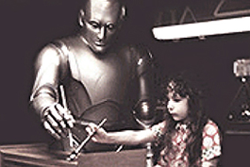
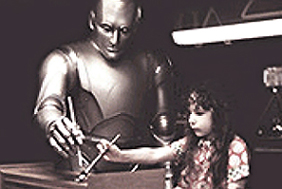

1942
 
Isaac Asimov(1920-1992) schreibt das Buch "Runaround", in dem er seine "3 Gesetze der Robotik" formuliert: 1.) Ein Roboter darf niemals einen Menschen verletzen, oder durch Nichthandeln zulassen, dass ein Mensch zu Schaden kommt. 2.) Ein Roboter muss den Befehlen, die ihm von Menschen gegeben werden, gehorchen, außer wenn sie mit dem ersten Gesetz in Widerspruch stehen. 3.) Ein Roboter muss seine eigene Existenz schützen, solange der Selbstschutz nicht gegen das erste oder zweite Gesetz verstößt. Später verfasste er u.a. "The Bicentennial Man", eine Geschichte, in der ein Roboter seine Unsterblichkeit aufgibt, um ein Mensch zu werden.